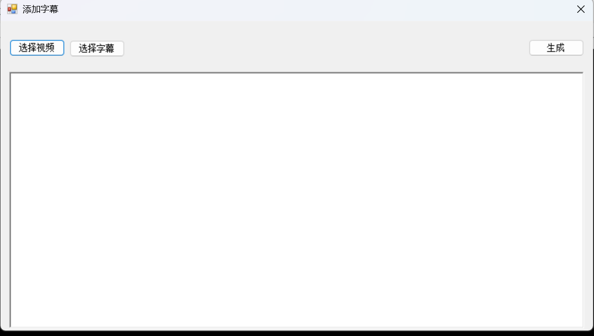

发布Microsoft VS Player 4.0
今天，我们发布了Microsoft VS Player 4.0，该版本的变化如下：
1.增加添加字幕功能

选择视频和字幕，再选择保存位置即可生成。
copyright © 2023 Carry Corporation,All Rights Reserved
今天，我们发布了Microsoft VS Player 4.0，该版本的变化如下：
1.增加添加字幕功能

选择视频和字幕，再选择保存位置即可生成。